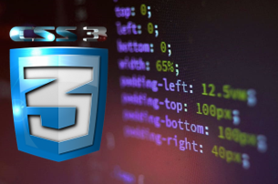
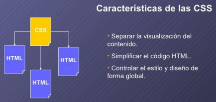

HOJAS DE ESTILO EN CASCADA CSS
Hoja de Estilo en Cascada o sus siglas CSS (en inglés Cascading Style Sheets) es un estándar creado especialmente para separar los atributos visuales de presentación tales como el color de la letra, el fondo, tamaño de letra, fuente, etc.; básicamente es el lenguaje que permite describir la presentación realizada en HTML o XML principalmente, ya que, a pesar de que puede trabajar con muchos documentos, su principal uso es para otorgar la información sobre la presentación de páginas web.
La separación entre contenido y presentación hace mucho más fácil el manejo del trabajo en general e incluso se pueden realizar un conjunto de estilos específicos que se pueden reutilizar en varias presentaciones; con lo anterior se reduce mucho el tiempo de trabajo.
Al diseñar un sitio web provisto de varias páginas, se puede usar CSS para mantener una uniformidad entre todas ellas sin necesidad de aplicar los diferentes estilos dentro de cada una de las páginas, perdiendo una gran cantidad de tiempo y sobretodo creando un desorden que va a complicar mucho el moverse a través del código de los sitios, especialmente malo en aquellos de gran tamaño con grandes cantidades de líneas; con CSS se puede sacar todo el código que se refiera a la parte visual de los sitios y colocarlo en un único documento que puede servir para todas las páginas que se estén manejando dentro de ese proyecto, ahorrando así tiempo y manteniendo una congruencia grupal entre ellas.
CSS puede aportar estilos a un conjunto de elementos tales como a todos los h1, o a todo lo que esté contenido dentro de un nav, o todos los artículos que se encuentren en todas las páginas del proyecto; y además puede enfocarse en un solo elemento de todos los existentes, esto aplicándole un id como identificador único de ese elemento o designando una clase (class) para un conjunto específico de elementos aunque sean de diferentes tipos. Igualmente se encarga de manejar imágenes, recursos audiovisuales, etc.
Lo anterior es solo una mínima parte de la gran cantidad de características y opciones que permite CSS, es por esto que su aprendizaje y manejo es de una importancia crucial y necesaria en el correcto diseño de sitios webs, pues actualmente es prácticamente inviable diseñar y crear sitios web html sin valerse de sus grandes beneficios.

Referencias bibliográficas:
* CSS Tutoriales. Developer.mozilla.org. (2021). Recuperado de http://developer.mozilla.org/es/docs/Web/CSS
* León, D. Hojas de estilo en cascada (CSS). Htmlquick.com. Recuperado de https://www.htmlquick.com/es/tutorials/css.html
* Vallejos, M., & Vlahusic, M. (2015). Hojas de estilo en cascada [Ebook] (pp. 1, 2). Recuperado de http://oca.unc.edu.ar/files/Libro-15.-CSS-avanzado.pdf